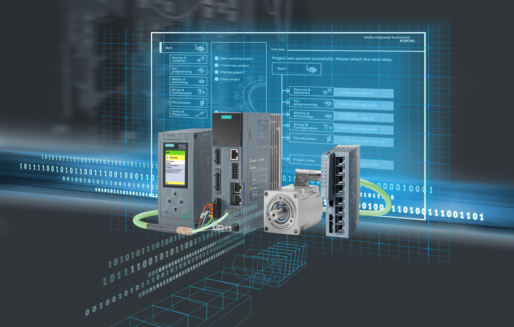
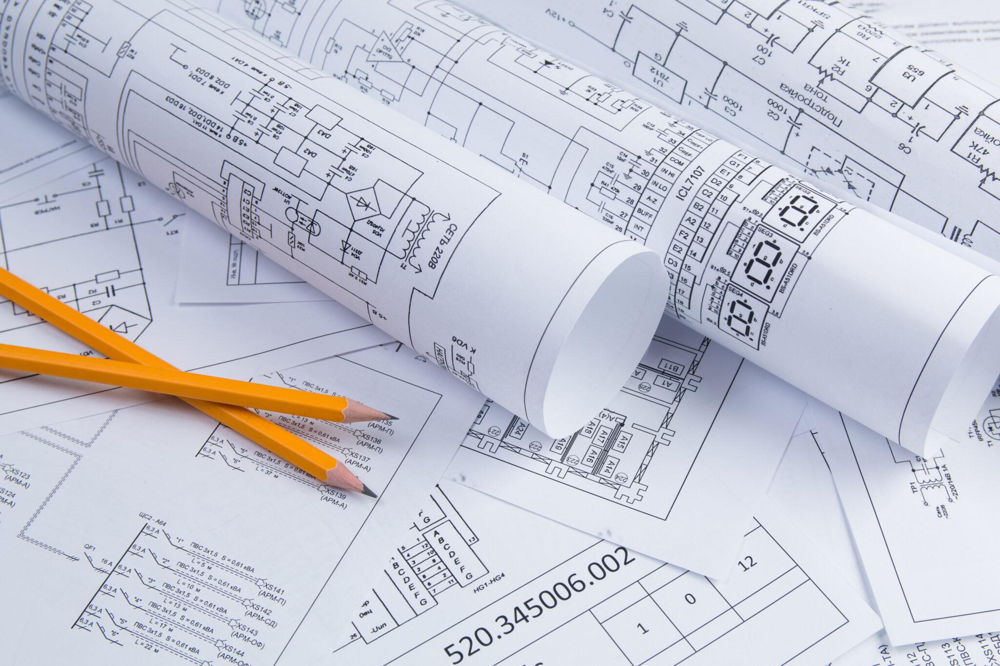
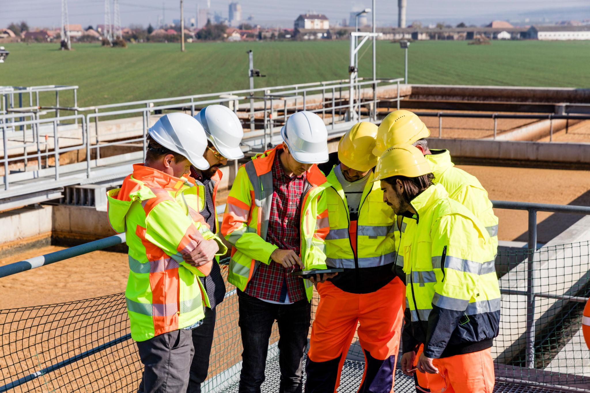
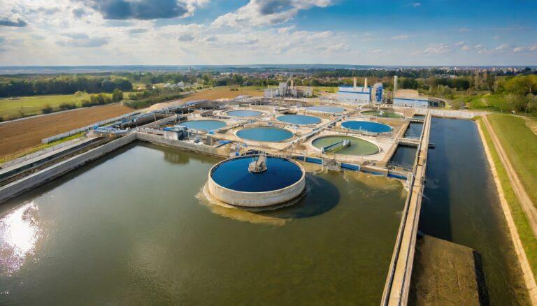
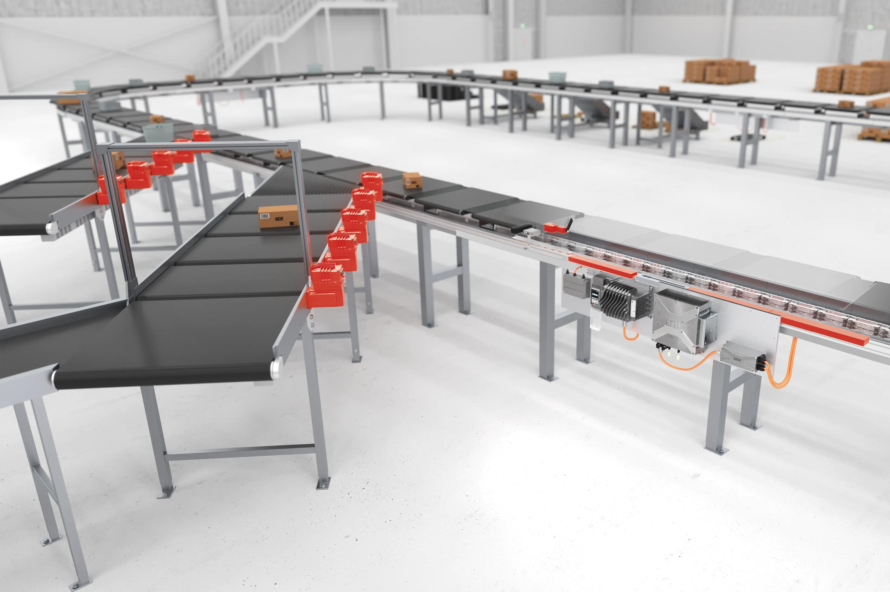

Storitve
Pomagam podjetjem pri razvoju in nadgradnji industrijskih sistemov od ideje
do zanesljivega delovanja v praksi. Združujem projektivo, programiranje in
izvedbo, kar omogoča hitrejšo realizacijo, manj napak in bolj usklajene rešitve.

PLC programiranje
Razvoj in optimizacija PLC programov za zanesljivo in pregledno delovanje industrijskih procesov.
Delo s krmilniki Siemens (S7-1200, S7-1500, TIA Portal) ter integracija z HMI in SCADA sistemi.
Vključuje sekvenčno logiko, alarmiranje in komunikacijo z napravami.

Projektiva in tehnične rešitve
Izdelava projektne dokumentacije za industrijske sisteme,
vključno z električnimi shemami, funkcijskimi opisi in zasnovo krmiljenja.
Določanje signalov, logike delovanja in izbira opreme z upoštevanjem
dejanskih obratovalnih pogojev.

Nadzor in vodenje projektov
Nadzor in vodenje projektov neposredno na terenu, z aktivnim spremljanjem
poteka del, preverjanjem izvedbe in reševanjem tehničnih izzivov.
Sodelovanje pri zagonu sistemov, preverjanje signalov, komunikacij
in pravilnega delovanja krmiljenja v realnem procesu.
ATEX in eksplozivna nevarna območja
Izbira in preverjanje opreme glede na zahteve ATEX (Ex izvedbe),
pregled skladnosti z veljavnimi standardi ter sodelovanje pri prilagoditvah
obstoječih sistemov. Vključuje tudi preverjanje pravilnosti izvedbe,
ozemljitev, zaščitnih ukrepov ter zagotavljanje varnega obratovanja
v zahtevnih industrijskih okoljih in pripravo dokumentacije za pregled.

Procesna avtomatizacija
Izvedba procesne avtomatizacije v industrijskih in komunalnih sistemih,
s poudarkom na odpadnih vodah (wastewater), črpališčih in čistilnih napravah.
Integracija instrumentacije (pretok, tlak, nivo, temperatura),
implementacija regulacijskih zank (PID) ter povezovanje naprav
v nadzorni sistem (PLC, HMI, SCADA).

Transportne in pakirne linije
Avtomatizacija transportnih in pakirnih linij, vključno z vodenjem transportnih trakov,
sortiranjem, pozicioniranjem in sinhronizacijo naprav v proizvodnem procesu.
Implementacija sekvenčnega vodenja, medsebojnih blokad ter komunikacije med napravami
za nemoteno in učinkovito delovanje linije. Poudarek na optimizaciji pretoka materiala,
zmanjšanju zastojev ter zanesljivem delovanju sistema.